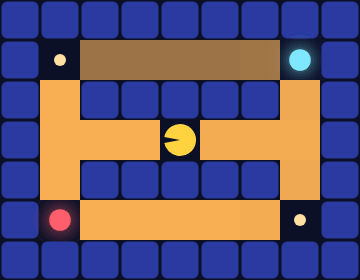

Quick-Start Guide to the genmlx.agents Library
Ports agentmodels.org Ch 8 (the webppl-agents library) — here as a single guided tour over the
genmlx.agentsspine, told in Pac-Man mazes.
This chapter is the orientation lap. Everything earlier in the book built one
agent family at a time; here we line them all up on Pac-Man worlds and show that
they share a deliberately tiny contract, that they compose, and that you can drop
in your own policy without leaving the GFI. One require carries the whole tour:
(require '[genmlx.agents.pacman :as pac])
The glyph and scoring legend (walls, pellets, power pellets, fruit, the per-step time cost) lives on the shared legend page — we lean on it here rather than restating it.
The whole contract is two keys
The honest surface is small. Every constructor in genmlx.agents returns a map,
and the only keys you are promised on every agent are :act and :params.
Everything else is family-specific — there is no universal :policy, no universal
:Q, and not even a single :act arity. The contracts test pins exactly this:
(doseq [[nm a] [["mdp" mdp-ag] ["biased" biased-ag] ["pomdp" pomdp-ag] ["bandit" bandit-ag]]]
(assert-true (str nm ": :act is callable") (fn? (:act a)))
(assert-true (str nm ": :params is a map") (map? (:params a))))
That loop passes for all four families. So the mental model is: an agent is a map
with a callable :act; the family tells you how to call :act and what extra
machinery (a value table, a belief filter, an arm posterior) rides alongside.
pac/mdp-agent — the optimal (or soft) planner
The flagship family is the fully-observed MDP planner. The Pac-Man binding is a
one-line convenience wrapper that compiles an ASCII maze and hands it to
agent/make-mdp-agent:
(defn mdp-agent
"Optimal (alpha ##Inf) or soft (finite alpha) MDP Pac-Man over a maze. Returns the
agent/make-mdp-agent contract {:mdp :Q :V :policy :act :expected-utility :params}.
Opts: :maze (ascii, default classic-maze) :utilities :noise :alpha :gamma :n-iters."
([] (mdp-agent {}))
([{:keys [maze utilities noise alpha gamma n-iters]
:or {maze classic-maze utilities pacman-scoring noise 0.0
alpha ##Inf gamma 1.0 n-iters 30}}]
(agent/make-mdp-agent {:mdp (pacman-mdp {:ascii maze :utilities utilities
:gamma gamma :noise noise})
:alpha alpha :gamma gamma :n-iters n-iters})))
alpha ##Inf is the optimal agent (a hard argmax over Q-values); any finite
alpha is the soft-rational Boltzmann planner. The returned map carries the full
MDP surface: :Q, :V, a :policy generative function, :act, and
:expected-utility. The :act is state-based — (act s) draws fresh entropy,
(act s key) is deterministic in the key — and both return an action integer.
On the classic-maze (a ring with four equidistant caches — pellet, power pellet,
and fruit at the corners), value is the only thing breaking the tie, so an optimal
Pac-Man heads for the highest cache. Here it is rolling out from the centre:

Each frame is one :act call followed by a transition sample. The floor shading
is the value function V(s) underneath — the agent is, frame by frame, climbing
its own value gradient toward the fruit.
pac/biased-agent — present bias, same shape minus the table
The hyperbolic-discounting planner is the genuine time-inconsistent agent. Its
binding takes a bias spec ({:discount k :bias :naive|:sophisticated}) and
otherwise mirrors mdp-agent. The contract difference is the load-bearing one:
the biased agent is recursion-only, so it has a :policy and an
:expected-utility but no tensor :Q/:V. The contracts test asserts both
directions of that boundary at once:
;; biased: GF policy + EU, but NO tensor :Q/:V (recursion-only) — the key drift
(assert-true "biased: has :policy :expected-utility but NO :Q/:V (recursion-only)"
(and (some? (:policy biased-ag)) (fn? (:expected-utility biased-ag))
(nil? (:Q biased-ag)) (nil? (:V biased-ag))))
At :discount 0 the biased planner recovers the unbiased plan exactly — a useful
sanity anchor. The :act arities are identical to the MDP agent’s, so from a
caller’s seat a biased Pac-Man is a drop-in for an optimal one; only its choices
betray the present bias.
pac/pomdp-agent — a hidden cache and a belief filter
When the maze hides which cache actually pays, the planner state stays the single
dense cell index and the uncertainty lives in a belief over latent worlds. The
pomdp-agent binding builds a QMDP agent over a pacman-pomdp env (default
haunted-maze, where a plain floor cell at index 12 is the signpost that reveals
the truth). Its surface is belief-shaped: :belief-Q, :update-belief,
:expected-utility, and the per-world agents — but its :act is now
belief-based, (act belief s).
The belief is just a normalized {world -> prob} map, and the filter obeys a
clean observation contract. The contracts test pins the headline behaviors: the
prior is flat, a nil observation is the identity, and a real observation at the
signpost snaps the belief to certainty while staying normalized.
(let [ub (:update-belief pomdp-ag)
prior (:prior pomdp-ag)]
(assert-close "prior sums to 1" 1.0 (reduce + (vals prior)) 1e-9)
;; nil-obs is the identity (absence is non-informative — the unified contract)
(assert-true "nil observation leaves the belief unchanged (agent level)"
(= prior (ub prior 10 nil)))
;; an informative observation snaps + stays normalized
(let [b' (ub prior 7 :A)]
(assert-close "reveal :A at the signpost -> P(:A)=1" 1.0 (:A b') 1e-9)
(assert-close "filtered belief stays normalized" 1.0 (reduce + (vals b')) 1e-9)))
So the prior splits its mass evenly, observing :A at the signpost drives
P(:A) = 1.0, and the posterior still sums to 1.0 to within 1e-9. The
manifest action trajectory is orthogonal to the latent world: the agent walks
toward the signpost, learns, then commits.
pac/bandit-agent — corridors as arms
The bandit family re-stories the maze: corridors become Bernoulli fruit-spawners,
and a “world” is the posterior over each arm’s payout. There is no GF policy here
(Thompson sampling and softmax-of-means are not a distribution over a fixed action
set), so the contract is {:act :update-belief :arm-values :params}. The belief
is {:arms [[α β] ...]}, one Beta per arm, and the update is conjugate. The
contracts test reads off the exact numbers:
(let [vals (:arm-values bandit-ag)
ub (:update-belief bandit-ag)]
(assert-close "Beta(1,1) arm mean = 0.5" 0.5 (first (vals bandit-belief)) 1e-9)
(let [b' (ub bandit-belief 0 1)] ; success on arm 0
(assert-true "conjugate update: arm 0 success -> alpha+1" (= [2 1] (get-in b' [:arms 0])))
(assert-true "conjugate update: other arms unchanged" (= [1 1] (get-in b' [:arms 1])))))
A fresh Beta(1,1) arm has mean exactly 0.5; a success on arm 0 increments its
α to give [2 1] while arm 1 stays [1 1] untouched. The :act here is
(act belief key) and returns an arm index — belief-based, like the POMDP agent,
but keyed by entropy rather than by current cell.
Bring your own policy
The point of the two-key contract is that you can satisfy it. A policy is just
an ordinary generative function whose :action site is the decision. Here are two
custom agents from the tour. First a uniform random walker:
(defn random-policy
"A custom RANDOM agent: act uniformly at random over `n-actions`, via the
value-carrying uniform-draw helper."
[n-actions]
(gen [_s] (trace :action (:dist (h/uniform-draw (vec (range n-actions)))))))
And an epsilon-greedy chooser that flips a biased coin between exploring uniformly and exploiting the greedy argmax of a host-side Q-row:
(defn epsilon-greedy-policy
"A custom EPSILON-GREEDY agent: with prob epsilon explore uniformly, else exploit
the greedy argmax of the Q-row via exact/categorical-argmax. `q-rows` is the
host-side [S][A] value table (mx/->clj of an agent's :Q)."
[q-rows n-actions epsilon]
(gen [s]
(let [explore (trace :explore (dist/flip epsilon))]
(trace :action
(if (pos? (mx/item explore))
(:dist (h/uniform-draw (vec (range n-actions))))
(exact/categorical-argmax (mx/array (nth q-rows s) mx/float32)))))))
Because these are GFs, they slot into the same rollout and inference machinery as
the built-in families — no engine change. The example checks the limiting cases:
with epsilon = 0.0 the policy always takes the greedy argmax action (pure
exploitation over 10 draws), and with epsilon = 1.0 it explores more than one
distinct action over 60 draws (pure exploration), while the random walker keeps
every one of 40 draws inside the legal index range 0..3.
The minimal world to test any of this on is the corridor — a one-row hallway to
a single power pellet — the smallest MDP that still has a real decision:
There is the whole library in one frame: a :act is called, a step is taken, and
the agent advances toward value. Swap the policy and the picture stays the same;
only the path changes.
Next: with the families and the contract in hand, the following chapters turn the camera around — using inference over an agent to recover the parameters behind its choices.